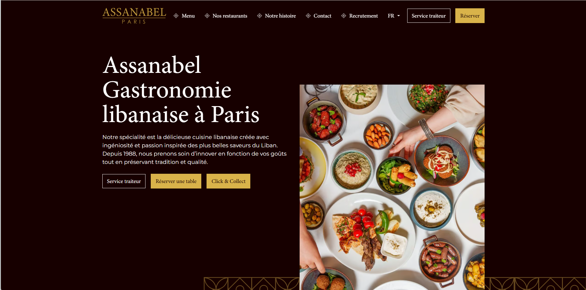

Développement Web
Site web restaurant moderne
Création d'un site responsive pour un restaurant avec présentation des services, menu, formulaire de contact et expérience utilisateur optimisée.
HTML5
CSS3
JavaScript
Git
Voir le projet